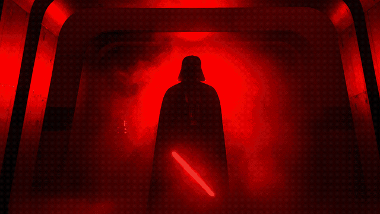
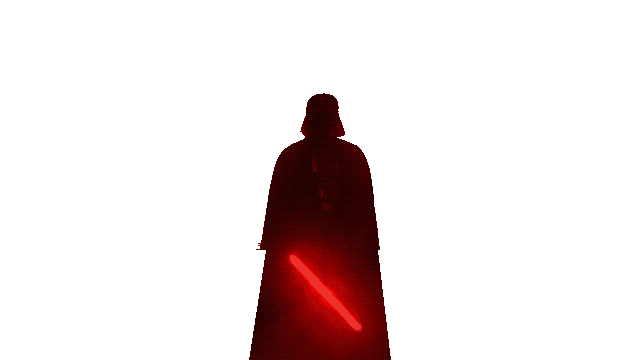

Pular para o conteúdo
Star Wars
Menu
Personagens
Filmes
Espécies
Planetas
Veículos
Naves
Buscar em todos os discos

Star
Wars

Personagens
Disco 1 · Heróis, vilões e droides da saga
Filmes
Disco 2 · Do Episódio I ao VI
Espécies
Disco 3 · Humanos, wookiees, hutts e outros povos
Planetas
Disco 4 · Desertos, pântanos e gigantes gasosos
Veículos
Disco 5 · Speeders, walkers e transportes de superfície
Naves
Disco 6 · Cargueiros, caças e cruzadores
Há muito tempo, numa galáxia muito, muito distante…